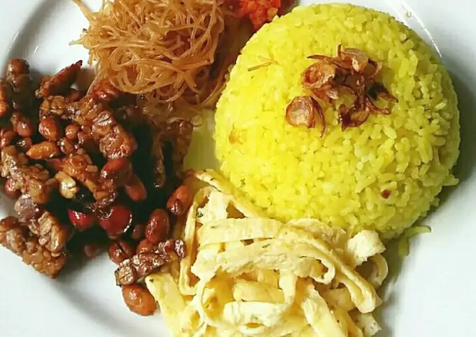
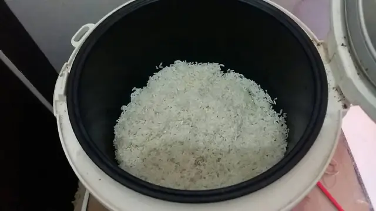
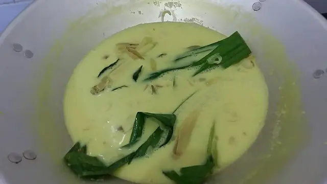

RESEP MAKANAN INDONESIA
cara membuat nasi kuning

A. Bahan yang digunakan
3 cup beras (1cup = 185-200gr)
10 cm kunyit (blender dgn 3 sdm air, saring. ambil airnya)
3 lembar daun pandan (ikat simpul)
4 batang daun serai (geprek)
2 lembar daun jeruk
1 ruas ibu jari lengkuas (digeprek)
1 ruas jahe (iris2)
5 lembar daun salam
1 kotak santan kara 200ml
5 buah bawang merah (iris2)
4 buah bawang putih (iris2)
secukupnya garam dan penyedap
B. Cara Membuat
Cuci bersih beras, tiriskan. Masukan ke dalam rice cooker.

Panaskan wajan, masukkan santan kara, dan semua bumbu.Tambahkan air kira2 sebanyak takaran normal utk memasak nasi di rice cooker.Aduk terus sampai agak mendidih. Matikan api.

Tuang santan ke dalam beras di rice cooker. bila airnya kurang boleh ditambahkan air santan secukupnya. Aduk2 beras dan santan agar tercampur rata.
Tekan tombol "cook" dan tunggu sampai matang.
Nasi kuning siap di sajikan dengan bahan pelengkap lainnya
lokasi saat ini